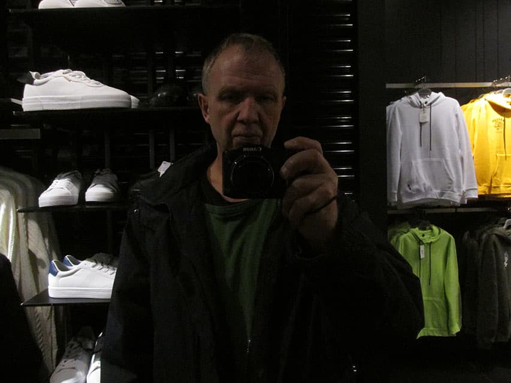
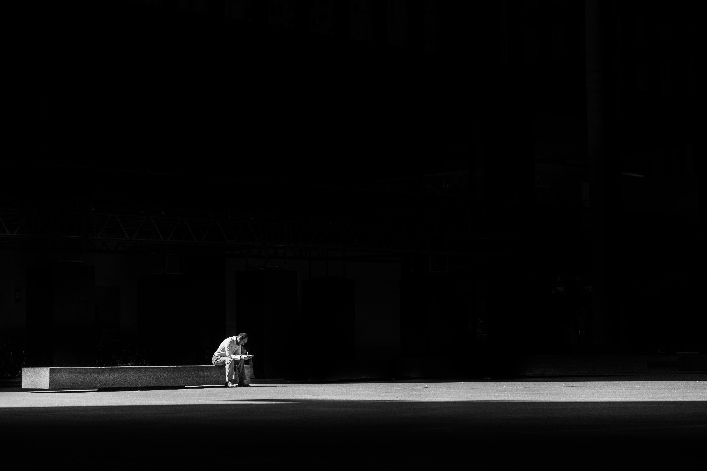
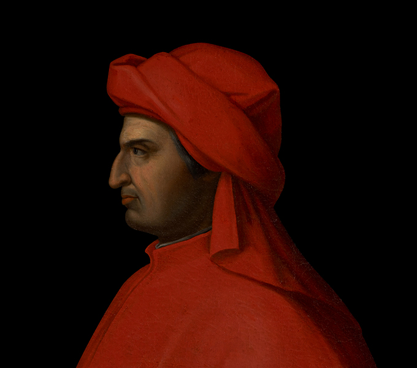

depo-500
Адвокатское онлайн бюро
Юридическая поддержка в банкротствах и возвратах недвижимости
Владимир
Олег
00001
Банкротные дела
Это самые комплексные и сложные судебные проекты. Задача должника — пройти процедуру банкротства как можно быстрее и с минимумом потерь. Задача кредитора — получить конкурентное преимущество перед другими кредиторами и взыскать задолженность частично или полностью. Мы можем выступать на стороне и тех, и других.
Что делаем
Формируем стратегию проекта от первого до последнего шага
Если представляем кредитора — ищем активы должников, оспариваем подозрительные сделки и контролируем торги
Если представляем должника — отбиваем требования кредиторов и комфортно реализуем банкротную процедуру
Взаимодействуем со всеми участниками процесса
Выстраиваем единую линию поведения с другими контрагентами даже в случае, когда изначально у нас разнонаправленные интересы
Участвуем во всех судебных разбирательствах
00002
Вернуть недвижимость
Основное направление нашей деятельности. Это проекты, направленные на то, чтобы выиграть конкретное дело в суде. Работаем в арбитраже, коммерческом арбитраже (в том числе МКАС), судах общей юрисдикции и третейских судах. Работаем в судах по всей стране. Специализируемся на проектах высокой сложности. Беремся за проекты, где все уже проиграно до нас.
Что делаем
Боремся за клиента до конца и настроены добиться успеха даже на последней стадии рассмотрения дела
0003
Проблемные активы
Кредиторы получают актив должника в счет непогашенной задолженности. Однако актив может быть неподконтрольным, убыточным, на него могут претендовать другие бенефициары — и тогда актив становится для клиента не выгодым, а проблемым. Наша задача — очистить актив от требований третьих лиц и подготовить его к продаже так, чтобы это было выгодно клиенту.
Что делаем
Устанавливаем контроль над активом
Проводим полный правовой аудит, чтобы выявить все риски и оценить возможность успешной борьбы за актив
При необходимости проводим финансовый аудит
Взаимодействуем со всеми участниками процесса
Вырабатываем стратегию очистки актива от притязаний бывшего менеджмента, бенефициаров и других кредиторов
0004
Сопровождение сделок
Сопровождаем сделки любой сложности: приобретение и отчуждение активов и бизнеса, прав требования к должникам, недвижимости. Наша задача — не просто добиться заключения сделки, а сделать так, чтобы в будущем не возникло споров и проблем.
Что делаем
Оцениваем все возможные варианты развития ситуации
Выявляем риски и делаем все, чтобы вовремя их хеджировать
Проверяем возможности другой стороны и третьих лиц оспорить сделку
Взаимодействуем со всеми участниками процесса
Боремся за клиента до конца и настроены добиться успеха даже на последней стадии рассмотрения дела
0005
Уголовные дела
В последнее время в корпоративных войнах и крупных спорах все чаще присутствует уголовное направление. В отличие от многих адвокатов, специализирующихся на арбитраже, мы не боимся браться и за уголовные дела. Чаще всего уголовный адвокат считается успешным, если дело не было возбуждено. А арбитражный адвокат успешен, если он может выиграть дело в последнем заседании. При этом обычно он до самого конца не знает, выиграл он или проиграл. Как арбитражные адвокаты, мы привыкли бороться до самого конца — и применяем этот подход в том числе в уголовной практике. Наше преимущество — свежий, «незамыленный» взгляд и очень развитый инструментарий, наработанный в арбитражной практике.
Что делаем
Работаем с доказательствами, со свидетелями, с судом
Участвуем в следственных мероприятиях и судебных заседаниях
Нивелируем давление следствия и стараемся получить меру пресечения, не связанную с лишением свободы
Взаимодействуем со всеми участниками процесса
Наши услуги
services
Восстановление прав на недвижимость
Юридическое резюме: Способы и порядок восстановления прав на недвижимое имущество 1. Правовая природа проблемы Восстановление права — это юридический процесс возвращения лицу возможности владеть, пользоваться и распоряжаться объектом недвижимости, которая была утрачена в силу фактических (утрата документов, снос) или юридических (незаконная регистрация, рейдерский захват, ничтожная сделка) причин. 2. Внесудебный порядок (только для утраты документов) Применяется, если право уже зарегистрировано в ЕГРН, но подлинники свидетельств или договоров утеряны/испорчены. Субъект: Собственник (или его законный представитель). Орган: Росреестр или МФЦ. Документ: Заявление о выдаче повторного свидетельства (выписки из ЕГРН). Срок: 3–5 рабочих дней. Важно: Этот способ не восстанавливает само право, а лишь фиксирует его существование. Если право отсутствует в реестре — нужен суд. 3. Судебный порядок (основной способ) Необходим при: утрате записи в ЕГРН по вине третьих лиц, незаконном списании объекта с кадастрового учета, признании права отсутствующим, оспаривании межевания. Основные иски: Об установлении факта владения (приобретательная давность) — ст. 234 ГК РФ. Условия: добросовестное, открытое, непрерывное владение как своим собственным в течение 15 лет (для недвижимости) или 5 лет (для движимости, но применяется аналогия). Итог: признание права собственности. Об истребовании имущества из чужого незаконного владения (виндикация) — ст. 301 ГК РФ. Цель: вернуть объект, который физически существует, но удерживается другим лицом. Срок исковой давности: 3 года с момента, когда лицо узнало о нарушении. О признании права собственности (при отсутствии регистрации). Пример: построен дом, но нет разрешения или утерян договор купли-продажи от 1995 года. О признании сделки недействительной (ничтожной) и применении последствий (реституция). Основания: мошенничество, подделка подписи, мнимость сделки. 4. Особые случаи восстановления Утрата единственного жилья по вине органов опеки: Восстановление через иск к РФ о компенсации или предоставлении равноценного жилья (ст. 1069 ГК РФ). Ошибка кадастрового инженера (неправильные границы): Иск об исправлении реестровой ошибки. Запись о праве погашена как «погашенная»: Иск о восстановлении записи в ЕГРН. 5. Практический алгоритм действий Получение выписки из ЕГРН (проверка текущего статуса права — «зарегистрировано», «отсутствует», «погашено»). Сбор правоустанавливающих документов (копии договоров, справки БТИ, архивные выписки, решения судов прошлых лет). Выбор способа защиты: Если документы есть, но в ЕГРН нет записи → иск о признании права. Если объекта нет (снос) → иск о возмещении ущерба либо признании права на реконструкцию (при самовольном сносе). Обращение в суд (по месту нахождения объекта). Вступление решения в силу (через 1 месяц, если нет апелляции). Регистрация права в Росреестре на основании решения суда. 6. Сроки и риски Срок исковой давности: Общий — 3 года. По ничтожным сделкам — 3 года с момента начала исполнения. По виндикации — 3 года. Риск: Пропуск срока давности дает ответчику право заявить о его применении, что ведет к отказу в иске. Риск «добросовестного приобретателя»: Если недвижимость куплена у мошенника, а предыдущий собственник её потерял по своей воле (например, оставил доверенность), суд может отказать в виндикации. 7. Госпошлина За подачу иска имущественного характера: от 400 до 60 000 руб. в зависимости от цены иска (кадастровой стоимости). За регистрацию права по решению суда: 2 000 руб. (для физлиц).
Банкротство
Юридическое резюме: Процедура банкротства (несостоятельности) 1. Понятие и признаки банкротства Банкротство — это признанная арбитражным судом неспособность должника в полном объеме удовлетворить требования кредиторов по денежным обязательствам и (или) исполнить обязанность по уплате обязательных платежей. Признаки для инициирования дела (ст. 3, 6, 213.3 Закона № 127-ФЗ): Субъект Сумма долга (от) Просрочка (от) Юридическое лицо 300 000 руб. 3 месяцев Физическое лицо 500 000 руб. (по общему правилу) 3 месяцев Физическое лицо (спецнорма) от 25 000 руб. (при реструктуризации) — Гражданин также вправе подать на банкротство при предвидении банкротства, даже если формально признаки не наступили. 2. Участники (субъекты) процесса Должник (кто не может платить). Кредиторы (те, кому должны). Уполномоченный орган (ФНС России — по налогам и сборам). Арбитражный управляющий (ключевая фигура, управляет процедурой): Временный (наблюдение для юрлиц); Финансовый (для граждан); Конкурсный (конкурсное производство); Административный (финансовое оздоровление). Суд (Арбитражный суд по месту нахождения/жительства должника). 3. Процедуры банкротства Для юридических лиц (последовательность): Наблюдение (надзор за должником, сохранность имущества, анализ признаков фиктивности/преднамеренности). Финансовое оздоровление (восстановление платежеспособности под контролем, длится до 2 лет). Внешнее управление (передача полномочий руководителя внешнему управляющему, мораторий на удовлетворение требований). Конкурсное производство (ликвидация, продажа имущества с торгов, распределение средств кредиторам). Срок — до 6 месяцев (продлевается). Для физических лиц: Реструктуризация долгов (разработка плана погашения долгов на 3 года с сохранением имущества). Итог: либо утверждение плана, либо переход к реализации имущества. Реализация имущества (продажа всего имущества, кроме единственного жилья и вещей первой необходимости — ст. 446 ГПК РФ). Длится до 6 месяцев. Мировое соглашение (на любой стадии) — прекращение дела при соглашении сторон. Спецрежим для граждан: Внесудебное банкротство (через МФЦ) — если сумма долга от 25 000 до 500 000 руб. и нет имущества, а взыскание прекращено (исполнительный лист вернулся). Срок — 6 месяцев, бесплатно. 4. Последствия и плюсы банкротства для должника (списание долгов) Положительные эффекты (ст. 213.28): Списание всех долгов, включая кредиты, займы, налоги, расписки. Прекращение начисления пеней, штрафов, процентов. Окончание исполнительного производства (приставы снимают арест, приостанавливают взыскания, кроме алиментов и вреда жизни/здоровью). Возвращение права заниматься бизнесом (после завершения дела). Ограничения после банкротства (для граждан): Запрет / последствие Длительность Повторно подавать на банкротство 5 лет Брать кредиты/займы без указания на факт банкротства 5 лет (иное — мошенничество) Занимать руководящие должности в финансовых организациях до 5 лет, в зависимости от процедуры Иметь статус ИП (если ИП признан банкротом) 5 лет Для юридических лиц: Исключение из ЕГРЮЛ (ликвидация). Субсидиарная ответственность руководителя и учредителей (если доказано доведение до банкротства — ст. 61.11). 5. Порядок подачи заявления (алгоритм для физлица) Досудебный этап: Уведомить всех известных кредиторов о намерении подать на банкротство (необязательно, но желательно). Оплата госпошлины: 300 руб. (ст. 333.21 НК РФ). Депозит суда: 25 000 руб. на вознаграждение финансового управляющего (можно просить рассрочку или использовать накопления). Сбор документов: Список кредиторов и долгов (форма). Описи имущества (включая доли в ООО, транспорт, счета). Справка о доходах 2-НДФЛ (за 3 года). Свидетельства о браке/разводе (если есть общие долги). Подача заявления: В Арбитражный суд по месту жительства. Через сервис «Мой Арбитр» (электронно) или на бумаге. Судебное разбирательство: Суд вводит процедуру (реструктуризация или реализация). 6. Почему могут отказать или не списать долги Отказ (ст. 213.6): Недостаточность оснований (долг меньше 500 тыс. или нет просрочки 3 мес.). Неполный пакет документов. Заявление подано с целью злоупотребления правом. Не списываются долги (ст. 213.28): Алименты, вред жизни и здоровью, возмещение морального вреда. Текущие платежи (после даты принятия заявления о банкротстве). При установлении недобросовестности должника: Сокрытие имущества или доходов. Предоставление ложных сведений управляющему. Привлечение к уголовной/административной ответственности за фиктивное банкротство (ст. 159, 197 УК РФ). 7. Риски и минусы для должника Продажа имущества — кроме единственного жилья (но если оно в ипотеке — могут продать для погашения залога). Контроль финансового управляющего: он получает доступ к счетам, блокирует выезд за границу (по ходатайству). Публичность: сведения о банкротстве вносятся в ЕФРСБ (Единый федеральный реестр сведений о банкротстве), что может повлиять на репутацию. Оспаривание сделок: все сделки должника за последние 3 года (особенно дарение, продажа имущества близким) могут быть признаны недействительными (ст. 61.2–61.3). 8. Альтернативы банкротству (когда не нужно подавать) Реструктуризация с кредиторами (рефинансирование, кредитные каникулы). Соглашение об отступном (отдать имущество в счет долга). Принудительное взыскание через приставов (если вы хотите платить, но медленно — банкротство ускорит списание, но заберет имущество).
Наследство
Вот юридический текст в формате резюме по теме «Наследство (наследственное право)» (согласно разд. V Гражданского кодекса РФ, ч. 3, ст. 1110–1185). Юридическое резюме: Наследование имущества 1. Понятие и основание наследования Наследование — это переход прав и обязанностей умершего лица (наследодателя) к другим лицам (наследникам) в порядке универсального правопреемства (т.е. в неизменном виде как единое целое в один момент). Два основания наследования (ст. 1111 ГК РФ): Основание Что означает По завещанию Воля наследодателя, оформленная нотариально (или приравненным лицом). По закону Если завещания нет, оно признано недействительным, либо наследники по завещанию отказались/не приняли наследство. 2. Наследование по завещанию (ст. 1118–1140.1) Требования к завещанию: Обязательно письменная форма. Удостоверение нотариусом. Свобода завещания: Можно лишить наследства всех, кроме обязательных наследников. Закрытое завещание: передается в заклеенном конверте нотариусу. Совместное завещание супругов: разрешено с 2019 года (но ограничено). Завещательный отказ (легат) — ст. 1137: Возложение на наследника обязанности выполнить что-либо для третьего лица (например, выплачивать ренту, передать конкретную вещь). Назначение исполнителя завещания (душеприказчик) — ст. 1134: Может как наследник, так и посторонний. Контролирует исполнение воли наследодателя. 3. Наследование по закону (очередность — ст. 1142–1148) Очередность наследников (в порядке убывания приоритета): Очередь Кто входит Пример 1 очередь Дети, супруг, родители, усыновленные и усыновители Базовые родственники 2 очередь Братья и сестры, дедушки/бабушки Полнородные и неполнородные 3 очередь Дяди и тети (братья и сестры родителей) — 4 очередь Прадедушки/прабабушки — 5 очередь Двоюродные внуки/внучки, двоюродные дедушки/бабушки — 6 очередь Двоюродные правнуки, племянники и т.д. — 7 очередь Пасынки, падчерицы, мачеха, отчим — Наследники последующих очередей призываются только при отсутствии или отказе предыдущих. Наследники одной очереди делят наследство поровну (кроме случаев приращения долей или завещательного указания). Право на обязательную долю (ст. 1149): Нетрудоспособные дети, супруг, родители, иждивенцы — не менее ½ доли, которая причиталась бы им по закону. Это право неснимаемо, даже при завещании на других лиц. Наследование по праву представления (ст. 1146): Если наследник по закону умер до открытия наследства, его доля переходит к его потомкам (например, внуки вместо умершего ребенка наследодателя). 4. Открытие наследства (ст. 1113–1115) Момент открытия — день смерти наследодателя (или день вступления в силу решения суда об объявлении умершим). Место открытия — последнее место жительства наследодателя (либо место нахождения имущества, если место жительства неизвестно). 5. Принятие наследства (ст. 1152–1154) Срок: 6 месяцев со дня открытия наследства. Способы принятия: Фактическое — вступление во владение, управление, оплата долгов, защита имущества (но нуждается в подтверждении, лучше зафиксировать документально). Юридическое — подача заявления нотариусу по месту открытия наследства. Последствия принятия: Считается принявшим независимо от получения свидетельства. Принятие части = принятие всего (нельзя выбрать часть долгов или имущества). Нельзя принять под условием (например, «получу квартиру, если за меня платят налоги»). Отказ от наследства (ст. 1157–1159): Безвозвратный, нельзя изменить решение. Можно отказаться в пользу других лиц (из любой очереди) или без указания лиц (тогда доля распределяется между остальными наследниками). Срок: также 6 месяцев. 6. Наследственная трансмиссия (ст. 1156) Если наследник умер после открытия наследства, но до его принятия, его право переходит к его наследникам (в порядке наследственной трансмиссии). 7. Выдача свидетельства о праве на наследство (ст. 1162–1165) Выдается по заявлению наследника нотариусом по истечении 6 месяцев (или ранее, если есть доказательства, что другие наследники отсутствуют). Документ подтверждает право на конкретное имущество. Общая собственность наследников — долевая (ст. 1164). 8. Долги наследодателя (ст. 1175) Наследник отвечает по долгам наследодателя в пределах стоимости перешедшего имущества. Кредиторы вправе предъявить требования в течение срока исковой давности (3 года), но не ранее принятия наследства. Нельзя требовать выплаты долгов в большем размере, чем стоимость наследства (ст. 323 ГК РФ не применяется). 9. Оформление наследства на практике (пошагово) Установить факт смерти (свидетельство о смерти). Определить место открытия наследства (последнее место жительства наследодателя). Собрать документы: Справка с последнего места жительства. Документы о родстве (свидетельство о рождении, браке, решение суда об установлении родства). Завещание (если есть). Документы на имущество (выписка ЕГРН, ПТС, договоры). Обратиться к нотариусу по месту открытия наследства (или любому, если наследство за границей – специальный порядок). Подать заявление о принятии наследства (или об отказе). Получить свидетельство о праве на наследство (через 6 месяцев). Зарегистрировать право в Росреестре (для недвижимости) или ГИБДД (для автомобиля) — пошлина 2000 руб. (для недвижимости) или 500 руб. (для ТС). 10. Сроки и риски Восстановление срока (ст. 1155): Если пропущен 6-месячный срок по уважительной причине (тяжелая болезнь, незнание о смерти, отсутствие сведений), суд может восстановить срок при условии обращения в течение 6 месяцев после отпадения причин (но не позднее 3 лет). Наследственный договор (ст. 1140.1): Альтернатива завещанию – двусторонний договор между наследодателем и наследником, который также удостоверяется нотариально. Отличается от завещания возможностью устанавливать взаимные обязательства. Риски: Скрытое завещание – может оказаться у другого нотариуса (проверяйте через реестр завещаний Федеральной нотариальной палаты). Обязательная доля снижает долю наследников по завещанию. Долги могут полностью «съесть» наследство (но не превысить его стоимость). Оспаривание завещания – возможно по основаниям недействительности сделки (подпись не наследодателя, недееспособность на момент подписания).
Автокредиты
Вот юридический текст в формате резюме по теме «Автокредит: оформление, риски, защита прав заемщика» (согласно ГК РФ, Федеральному закону № 353-ФЗ «О потребительском кредите (займе)» и Закону РФ «О защите прав потребителей»). Юридическое резюме: Автокредит 1. Понятие и правовая природа Автокредит — это разновидность потребительского кредита, предоставляемого банком физическому лицу для покупки транспортного средства для личных нужд, не связанных с предпринимательской деятельностью . Законодательство не выделяет автокредит как отдельный вид кредита. Отношения регулируются: Федеральный закон № 353-ФЗ «О потребительском кредите (займе)» — общие требования к договору Глава 23 ГК РФ (ст. 334–358) — правила залога автомобиля Закон № 2300-I «О защите прав потребителей» — защита прав заемщика Локальные акты банка — правила кредитования (не должны противоречить закону) 2. Существенные условия договора Кредитный договор заключается в обязательной письменной форме (несоблюдение влечет недействительность) . Обязательные элементы договора: Элемент Что должно быть указано Стороны Банк (кредитор) и заемщик Сумма кредита Размер предоставляемых средств Процентная ставка Годовая и полная стоимость кредита (ПСК) Срок На какой период выдан кредит Порядок погашения График платежей, даты, суммы Обеспечение Залог автомобиля (чаще всего) Ответственность Штрафы, пени, неустойки за просрочку Досрочное погашение Право заемщика и порядок Право заемщика на информацию: До подписания договора банк обязан предоставить полную информацию о сумме кредита, графике погашения, ПСК, штрафных санкциях, возможности досрочного погашения . 3. Залог автомобиля (основное обеспечение) Большинство автокредитов предоставляется под залог приобретаемого автомобиля . Последствия залога для заемщика: Автомобиль остается у заемщика, но обременен залогом в пользу банка Банк вправе обратить взыскание на машину при неисполнении обязательств (ст. 348 ГК РФ) Залог регистрируется в реестре уведомлений о залоге движимого имущества (ведение нотариата) Продажа залогового автомобиля: Если долг не погашен, банк может инициировать изъятие и продажу с публичных торгов При продаже залогового авто долг перед банком не прекращается — если вырученной суммы недостаточно, банк вправе взыскать остаток из другого имущества должника Защита заемщика при обращении взыскания (ст. 348 ГК РФ): Суд может отказать в обращении взыскания, если: Нарушение обязательства незначительно Размер требований явно несоразмерен стоимости автомобиля 4. Страхование при автокредите Это одна из самых спорных тем. Разберем по видам страхования. А. Обязательное страхование (ОСАГО) Обязательно для всех владельцев ТС, использующих автомобиль на дорогах РФ. К автокредиту прямого отношения не имеет . Б. КАСКО (страхование автомобиля от угона и ущерба) Факультативно, но банк может потребовать как условие кредита Требование банка о страховании залогового автомобиля законно, поскольку страхование предмета залога — обязанность залогодателя (подп. 1 п. 1 ст. 343 ГК РФ) Последствия отказа от КАСКО: Если заемщик не страхует автомобиль более 30 дней: Банк вправе потребовать досрочного возврата всей суммы кредита Банк вправе увеличить процентную ставку до ставки по кредиту без страхования В. Страхование жизни, здоровья, финансовых рисков Никакого обязательного страхования законом не предусмотрено Банк не вправе обусловливать выдачу кредита обязательным страхованием жизни и здоровья (ст. 935 ГК РФ) Навязывание таких страховок — нарушение ст. 16 Закона о защите прав потребителей Право на отказ от страховки («период охлаждения»): Заемщик вправе отказаться от добровольного страхования в течение 14 календарных дней со дня заключения договора При отказе страховая премия возвращается в полном объеме (при отсутствии страхового случая) Деньги возвращаются в течение 7 рабочих дней 5. Навязывание дополнительных платных услуг (распространенные схемы) Центробанк и Роспотребнадзор регулярно выявляют нарушения при автокредитовании. Основная проблема — навязывание ненужных услуг . Популярные схемы обмана : Вид услуги Суть схемы Почему незаконно Программы техпомощи («Автодруг») Сервис по вызову аварийного комиссара, «трезвый водитель» Часто не работает, услуга считается оказанной сразу, деньги не возвращают Флешки / пароли к сайтам Доступ к «информационным материалам» (бланки Европротокола, памятки) Услуга мнимая, договор считается исполненным с момента передачи Платные консультации Консультации по страховым программам или эксплуатации авто Консультации такого рода в силу закона не являются платными Сервисное обслуживание Навязывание допобслуживания, несмотря на гарантию Услуга дублирует гарантийные обязательства Права заемщика в отношении допуслуг: Банк не вправе отказывать в кредите из-за отказа от дополнительных услуг Заемщик вправе отказаться от дополнительной услуги в течение 30 дней после согласия на ее приобретение (период охлаждения для иных допуслуг, не только страховок) Согласие на допуслуги должно быть отражено в отдельном заявлении — банк не вправе автоматически проставлять отметки Как защититься: Внимательно читайте заявление о выдаче кредита — самостоятельно проставляйте отметки о согласии только на нужные услуги Не верьте консультантам, что «кредит без страховки невозможен» — это ложь При отказе в возврате денег — обращайтесь в Банк России, Роспотребнадзор, к финансовому омбудсмену или в суд 6. Просрочка платежей: последствия и способы решения Последствия просрочки: Начисление неустойки (пени, штрафы) по условиям договора Банк вправе потребовать досрочного возврата всей суммы кредита (ст. 14 Закона № 353-ФЗ) Обращение взыскания на залоговый автомобиль (изъятие и продажа с торгов) Что делать при финансовых трудностях: Не игнорировать банк — сообщить о проблеме Запросить кредитные каникулы (до 6 месяцев) — право заемщика, если доход снизился более чем на 30% Предложить реструктуризацию — изменение графика платежей, снижение ставки Добровольно продать автомобиль — иногда выгоднее, чем ждать принудительных торгов банка 7. Досрочное погашение Право заемщика: Погасить кредит досрочно полностью или частично без штрафов и комиссий Уведомить банк необходимо за 30 дней (или меньший срок по договору) При частичном досрочном погашении банк обязан предложить новый график платещей Запрещенные условия: Банк не вправе запрещать досрочное погашение в первые 2-3 месяца — это незаконно и является недобросовестной практикой . 8. Ответственность созаемщика и поручителя При автокредитовании банки могут привлекать созаемщиков или поручителей. Отличия: Созаемщик Поручитель Ответственность Солидарная (отвечает наравне с заемщиком с первого дня) Субсидиарная (отвечает, если заемщик не платит) Договор Кредитный (подписывает вместе с заемщиком) Отдельный договор поручительства Доступ к информации Полный доступ ко всем данным о кредите Не узнает о просрочках, пока банк не обратится Влияние на КИ Долг попадает в кредитную историю Не попадает, пока фактически не платит Статус собственника авто Не становится собственником автоматически — только по соглашению Не имеет прав на авто Риски созаемщика: Если основной заемщик перестает платить — банк взыскивает долг с созаемщика Долг отражается в кредитной истории созаемщика, снижая его шансы на собственные кредиты Созаемщик не приобретает прав на автомобиль, если иное не оговорено 9. Практический алгоритм действий заемщика При оформлении автокредита: Сравнить условия нескольких банков (ставка, срок, комиссии, требования к страховке) Прочитать договор полностью, обратить внимание на штрафы, возможность досрочного погашения В заявлении о выдаче кредита самостоятельно проставить отметки о согласии только на нужные допуслуги Не поддаваться на давление — закон запрещает отказ в кредите из-за отказа от допуслуг При возникновении спора о навязанных услугах: Направить письменную претензию банку / страховой компании с требованием вернуть деньги При отказе — обратиться к финансовому уполномоченному (обязательный досудебный этап для споров до 500 000 руб.) Подать жалобу в Банк России или Роспотребнадзор Обратиться в суд При просрочке: Сообщить банку о трудностях ДО возникновения длительной просрочки Запросить кредитные каникулы (если доход снизился) Не скрывать автомобиль — это может привести к уголовной ответственности по ст. 159 УК РФ (мошенничество) При обращении банка в суд — заявлять о несоразмерности требований (ст. 348 ГК РФ) 10. Сроки и риски (кратко) Параметр Значение Срок исковой давности по кредитным спорам 3 года с момента, когда банк узнал о нарушении Период охлаждения для страховок 14 дней (возврат 100% премии) Период охлаждения для иных допуслуг 30 дней Просрочка для обращения взыскания Не менее 90 дней по кредиту, обеспеченному залогом (Закон № 353-ФЗ) Увеличение ставки при отказе от страховки Возможно по условиям договора Итоговая рекомендация: Автокредит — обычный потребительский кредит, но с особенностью в виде залога автомобиля. Никакого обязательного страхования жизни и здоровья законом не установлено. Главная угроза для заемщика — навязывание дополнительных платных услуг, которые увеличивают сумму кредита в 1,5–2 раза. Используйте период охлаждения (14–30 дней) для отказа от ненужных услуг. При просрочке банк имеет право изъять автомобиль через суд и продать с торгов. Но суд может отказать, если нарушение незначительно или несоразмерно стоимости авто. Перед подписанием обязательно читайте каждый лист документов — практика показывает, что многие заемщики не знают, какие услуги им навязали, пока не пытаются отказаться от них постфактум.
Списание ЖКХ задолженностей
Юридическое резюме: Списание задолженности по ЖКХ 1. Основной тезис (самое важное) Задолженность по ЖКХ автоматически не списывается по истечении любого срока. Распространенное мнение о том, что долги «сгорают» через три года — это миф. С истечением срока исковой давности (3 года) право требования долга не прекращается, кредитор (УК, ТСЖ, ресурсоснабжающая организация) по-прежнему может указывать эту задолженность в квитанциях . Что реально дает истечение 3 лет: Если УК подаст в суд, вы вправе заявить о пропуске срока исковой давности. Суд откажет во взыскании долга за период старше 3 лет (при условии, что вы заявили об этом) . Важно: Суд не спишет долг автоматически — нужно ваше заявление в суде . 2. Срок исковой давности по ЖКХ Общий срок исковой давности — 3 года (ст. 196 ГК РФ) . Особенность расчета для коммунальных платежей Плата за ЖКУ — это периодические платежи (ежемесячные). Это значит, что 3 года отсчитываются для каждого месяца отдельно со дня, когда наступил срок оплаты . Как считать на практике Обычно оплатить ЖКУ нужно до 10-го числа месяца, следующего за расчетным (с 1 марта 2026 года срок сдвинут на 15-е число) . Пример расчета: Долг за сентябрь 2021 (срок оплаты до 10.10.2021) Срок исковой давности — с 11.10.2021 по 10.10.2024 Если УК подаст иск в суд в ноябре 2024 года, вы заявляете о пропуске срока — суд отказывает во взыскании долга за сентябрь 2021. Что прерывает срок исковой давности (важно!) Срок исковой давности прерывается (начинает течь заново), если должник: Признал долг (подписал акт сверки, написал заявление о признании долга, частично оплатил задолженность). Ключевой нюанс от Верховного Суда: Частичная оплата долга не является признанием всего долга, если должник прямо об этом не заявил . То есть: Заплатили 500 руб. из старого долга в 50 000 руб. — это не прерывает срок по всему долгу. Подписали акт сверки, где признали весь долг — это прерывает срок. 3. Законопроект о «коммунальной амнистии» (статус) В Госдуму вносился законопроект № 738681-7, предлагавший обязать поставщиков ЖКУ автоматически списывать долги граждан с истекшим сроком исковой давности . На текущий момент (2026 г.) этот законопроект не принят. Действующее законодательство не обязывает УК списывать старые долги . 4. Судебная практика (примеры из решений судов) Позиция судов: истечение срока давности ≠ списание долга Пример 1 (Первый кассационный суд, 2024 г.): Суд указал, что доводы о том, что задолженность за периоды с истекшим сроком исковой давности подлежит списанию, основаны на неверном понимании норм материального права. Отказ во взыскании в связи с пропуском срока не означает, что долга не было или что его нужно аннулировать из квитанций . Пример 2 (Челябинский областной суд, 2023 г.): Суд прямо указал: требование об обязанности списать и аннулировать задолженность по истечении срока исковой давности не основано на законе. Истечение срока само по себе не свидетельствует об отсутствии задолженности . Пример 3 (Шестой кассационный суд, дело № 88–4140/2021): Житель Казани требовал исключить из квитанций все долги «старше» 3 лет. Суды апелляционной и кассационной инстанций отказали, указав, что истечение срока исковой давности — не основание для прекращения обязательства и перерасчета начислений . Единичные случаи, когда суды вставали на сторону должников В некоторых делах суды удовлетворяли иски об исключении старых долгов из квитанций, но это исключения, а не правило. Например, в деле № А78–4842/2023 апелляционный суд встал на сторону должника, но кассация отменила это решение, вернув позицию, что закон не предусматривает списания . 5. Как законно «списать» старые долги (алгоритм действий) Поскольку автоматического списания нет, единственный способ избавиться от старых долгов — дождаться иска от УК и правильно в нем защищаться. Пошаговый алгоритм: Шаг 1. Ничего не признавайте и не платите по старым долгам Без подписанного акта сверки или прямого письменного признания долга срок исковой давности не прерывается. Шаг 2. Дождитесь, пока УК подаст в суд (или не подаст) Многие УК годами не обращаются в суд, продолжая выставлять долги в квитанциях. Они имеют на это право . Шаг 3. Если УК подала иск — НЕ ИГНОРИРУЙТЕ СУД Это главная ошибка должников. Если вы не явитесь в суд, УК взыщет весь долг, даже с истекшим сроком. Шаг 4. До вынесения решения судом заявите ходатайство о применении срока исковой давности Это можно сделать в письменном отзыве на иск или устно в заседании. Заявить нужно в суде первой инстанции. В апелляции это уже не сработает (ст. 199 ГК РФ) . Шаг 5. Суд отказывает во взыскании долга за период старше 3 лет Суд взыщет только долг за последние 3 года (и текущие платежи). Шаг 6. Остаток долга в квитанциях? Суд не обязывает УК удалять долг из квитанций. Однако на практике: Если УК уже проиграла суд по этому долгу, повторно подать иск она не сможет. Некоторые УК после проигрыша в суде добровольно перестают указывать старый долг. Если продолжают указывать — можно обратиться в Госжилинспекцию или подать иск о признании действий УК незаконными (но шансы невысоки, судебная практика скорее на стороне УК) . 6. Важные нюансы и подводные камни Наследование долгов по ЖКХ Наследники отвечают по долгам наследодателя, в том числе по ЖКХ, в пределах стоимости наследственного имущества (ст. 1175 ГК РФ). Истечение срока исковой давности не прекращает обязательство, поэтому УК может требовать долг с наследников . Субсидии на оплату ЖКХ С 2020 года при оформлении субсидии учитываются долги только за последние 3 года. Долги старше 3 лет не препятствуют получению субсидии (ст. 159 ЖК РФ в ред. от 2020 г.) . Можно ли договориться с УК добровольно? Да, иногда управляющие организации идут навстречу и по заявлению жильца исключают многолетнюю просрочку из квитанций. Обычно это возможно при условии, что жилец обязуется погасить текущую задолженность. Это не обязанность УК, а ее право . Списание с баланса УК (бухгалтерская процедура) С бухгалтерской точки зрения, задолженность с истекшим сроком исковой давности признается безнадежной к взысканию и подлежит списанию с баланса организации. Однако это не освобождает должника от обязательства — просто УК не может учитывать этот долг как актив . Должнику от этого ни холодно, ни жарко. 7. Распространенные мифы о списании долгов ЖКХ Миф Реальность «Через 3 года долг автоматически сгорает» Нет, долг никуда не исчезает, его просто нельзя взыскать через суд «Можно подать в суд и заставить УК списать старый долг» Суды отказывают в таких исках — истечение срока давности не основание для списания «Если заплатить рубль — всё, срок начался заново» Нет, частичная оплата без признания всего долга не прерывает срок по всему долгу «По коммунальным долгам короткий срок давности» Нет, общий — 3 года, как по всем гражданским обязательствам 8. Краткая памятка для должника Не ждите автоматического списания — его не будет. Не признавайте старые долги — не подписывайте акты сверки, не делайте частичных оплат. Если УК подала в суд — обязательно явитесь и заявите о пропуске срока исковой давности. Требование УК в квитанциях за период старше 3 лет — законно, оспорить сложно. Если хотите чистую квитанцию — попробуйте договориться с УК добровольно (но это не обязанность УК). Итоговая рекомендация: Закон не предусматривает автоматического списания долгов по ЖКХ. Истечение 3 лет означает только то, что суд не взыщет такой долг, если вы об этом попросите. Единственный реальный способ избавиться от долга (получить судебный акт об отказе во взыскании) — дождаться иска от УК и правильно в нем защищаться. Не игнорируйте судебные повестки — если не явиться, долг взыщут в полном объеме, включая «старые» периоды. Долг будет продолжать висеть в лицевом счете, и УК вправе его там держать. Влиять на получение субсидий он уже не будет, но создавать психологический дискомфорт — да.
О нас
about us
Мы не обещаем луну с неба. Мы просто умеем работать быстрее и качественнее других. Каждый в команде — прошедший проверку профи с реальным опытом. Никакой воды: только гарантия результата и четкое соблюдение сроков. Наша история пишется здесь и сейчас — вашими победами.
We don't promise the moon. We just work faster and better than the rest. Every team member is a qualified expert with proven track records. No fluff: just a solid guarantee and strict deadlines. Our story is being written right now — through your victories.
Всё началось не с офиса и не с планов. История depo-500 началась с одного человека — Владимира. Он вложил в компанию не только деньги и время, а кое-что поважнее: свою целеустремлённость и настоящую страсть к делу. Эти качества стали ДНК depo-500. Они передаются как семейная ценность — от основателя к каждому сотруднику. Прошло более 20 лет, но дух не изменился. Мы всё так же горим своим делом, не сдаёмся перед трудностями и верим, что честная работа всегда побеждает. depo-500 — это не просто бренд. Это характер одного человека, который стал характером целой команды.

Всё началось не с шаблонов и не с готовых решений. Цифровая вселенная depo-500 началась с одного человека — Олега. Он вложил в разработку не только строки кода, а кое-что поважнее: своё упорство и настоящее стремление к идеалу. Эти качества стали фундаментом сайта depo-500. Они зашиты в каждый пиксель и каждую кнопку. Прошло более 5 лет, но стандарты не изменились. Мы всё так же проверяем каждую деталь, не боимся сложных задач и верим, что качественная работа всегда заметна. depo-500 — это не просто веб-сайт. Это подход одного человека, который стал подходом всей команды.
Команда
team
depo-500 — это команда опытных адвокатов, удостоенная множества наград. Когда на кону ваша свобода или карьера, вы можете положиться на нашу команду, которая уже более 10 лет ведет сложные дела и добивается для вас наилучшего исхода. Наши адвокаты вели более 90 дел и судебных процессов. Мы начнем работу над вашим делом с того, что выслушаем вас, узнаем вашу историю и цели. Мы понимаем, что это может быть одним из самых стрессовых периодов в жизни. Мы будем рядом с вами, будем бороться на вашей стороне, предлагать решения и проверенные стратегии, основанные на опыте и нацеленные на вашу защиту. Если вы хотите добиться наилучшего результата, позвоните нам. Наши юристы — эксперты в области взаимодействия с правовой системой для достижения ваших целей. Мы предлагаем бесплатную консультацию, чтобы обсудить ваше дело, ваши права и то, как мы можем вам помочь.
Недвижимость
property
Наши юристы вот уже двадцать пять лет изо дня в день участвуют в судебных процессах. Это дает нам ценный опыт, необходимый для эффективного построения стратегии и тактики процесса. Ведь только практика дает понимание того, как мыслит судья! Но дело не только в практике. Наши юристы постоянно анализируют изменения в законе и подходах судов, ведут научную и преподавательскую деятельность, публикуют статьи в юридических изданиях, участвуют в конференциях и семинарах. И это помогает нам в нашей основной работе. Без понимания того, как устроена правовая система, в сложном деле вряд ли можно рассчитывать на успех в суде! depo-500 берется за уникальные дела, в которых аргументы доверителя не нашли понимания в нижестоящих инстанциях. Наши юристы готовы представить клиента (и многократно это делали) в судах самого высокого уровня, включая Верховный Суд и Конституционный Суд. А если нужно, мы окажем содействие и в трансграничных спорах, в том числе, рассматриваемых в судах сразу нескольких юрисдикций.
Вернуть недвижимость обратно
Перерегистрация права собственности на исходного владельца
Тема «Перерегистрация права собственности на исходного владельца» (то есть возврат квартиры, дома или земли тому, кто продал её ранее) — юридически сложный процесс. В законном поле это возможно только при наличии чётких оснований, указанных в Гражданском кодексе РФ.
Вот все законные способы, как это сделать, сгруппированные по механизмам действий.
1. Расторжение договора купли-продажи (ДКП)
Это самый частый способ, но он возможен только при взаимном согласии сторон или существенном нарушении условий сделки. По соглашению сторон (бывший владелец договаривается с нынешним). Подаётся заявление в Росреестр о регистрации прекращения права и возврате собственности. Нужно: новое соглашение о расторжении + акт приёма-передачи квартиры обратно. В судебном порядке (если покупатель не заплатил, или продавец обманул, или обнаружены скрытые дефекты). Суд обязывает вернуть квартиру.
2. Признание сделки недействительной (оспоримая или ничтожная сделка)
Этот путь используется, когда договор был, но он незаконен с самого начала. Основания (вы должны это доказать в суде): Сделка совершена под влиянием заблуждения (продавец думал, что подписывает договор аренды или дарения). Сделка совершена под угрозой, насилием, обманом (ст. 179 ГК РФ). Продавец был недееспособен или не понимал своих действий (нужна посмертная психолого-психиатрическая экспертиза). Сделка мнимая или притворная (например, продажа для вида, чтобы не отдавать долги). Результат: Суд возвращает всё в исходное состояние (реституция). Право собственности аннулируется у покупателя и регистрируется на продавца.
3. Истребование имущества у добросовестного приобретателя (Виндикация)
Это когда продавец (бывший владелец) вообще не подписывал договор — квартиру украли, подделали документы или продал мошенник по доверенности. Механизм: Подаётся иск в суд о признании отсутствующим права собственности у «покупателя» и о возврате квартиры законному хозяину. Сложность: Если новый покупатель «добросовестный» (не знал о краже и проверил документы), суд может отказать, если квартира куплена возмездно (за деньги). Но если квартира была украдена или выбыла из владения помимо воли, виндикация работает (ст. 302 ГК РФ).
4. Исполнение решения суда по «обратной купле-продаже»
Иногда бывшие владельцы выкупают квартиру обратно. Это не «перерегистрация на исходного», а новая сделка: Заключается новый договор купли-продажи (теперь исходный владелец — покупатель). Оплачивается госпошлина, налоги (если квартира была в собственности менее 3-5 лет у продавца).
5. Отмена договора дарения (если исходная передача была дарением)
Если право собственности было передано безвозмездно (дарение, а не купля-продажа), закон позволяет отменить дарение в суде в случаях: Одаряемый совершил покушение на жизнь дарителя или членов его семьи. Одаряемый умышленно нанёс тяжкий вред здоровью дарителя. Даритель переживёт одаряемого (оговорено в договоре).
Банкротство
bankruptcy
Адвокатское бюро depo-500 — это коллектив юристов, основная специализация которых — судебные споры. Мы помогаем нашим доверителям и вне зала судебных заседаний, но все же наша основная специальность – судебные споры. Наш конек – гражданско-правовые споры и в особенности банкротное право. Но не только это. Мы помогаем нашим клиентам и во многих других категориях дел. В банкротном праве все классические представления цивилистов вдруг оказываются неработающими и вступают в действие совсем другие, гораздо более сложные законы. Однако специфика банкротных дел не только в сложности возникающих в них теоретических вопросах. Подчас гораздо важнее решить не менее сложные практические проблемы: выработать единую позицию кредиторов, отыскать припрятанные должником активы, успеть вовремя оспорить сомнительные сделки должника, привлечь к финансовой ответственности его жуликоватых руководителей и так далее. И наоборот, перед собственниками и руководителями бизнеса могут встать не менее сложные задачи по защите от несправедливых обвинений. Поэтому и в практической юриспруденции для ведения дел, связанных с банкротством, часто нужны не просто грамотные специалисты, а настоящие асы, способные на высший пилотаж в литигации!

bankruptcy | Банкротство
Наши юристы вот уже двадцать пять лет изо дня в день участвуют в судебных процессах. Это дает нам ценный опыт, необходимый для эффективного построения стратегии и тактики процесса. Ведь только практика дает понимание того, как мыслит судья! Но дело не только в практике. Наши юристы постоянно анализируют изменения в законе и подходах судов, ведут научную и преподавательскую деятельность, публикуют статьи в юридических изданиях, участвуют в конференциях и семинарах. И это помогает нам в нашей основной работе. Без понимания того, как устроена правовая система, в сложном деле вряд ли можно рассчитывать на успех в суде! Нередко depo-500 берется за уникальные дела, в которых аргументы доверителя не нашли понимания в нижестоящих инстанциях. Наши юристы готовы представить клиента (и многократно это делали) в судах самого высокого уровня, включая Верховный Суд и Конституционный Суд. А если нужно, мы окажем содействие и в трансграничных спорах, в том числе, рассматриваемых в судах сразу нескольких юрисдикций.
Следуя закону, действуй по справедливости
Бартоло да Сассоферрато
